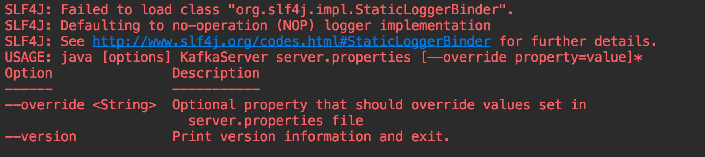
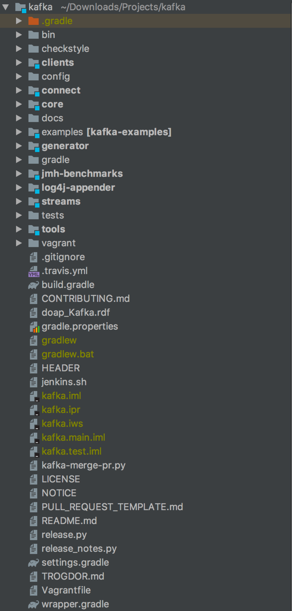
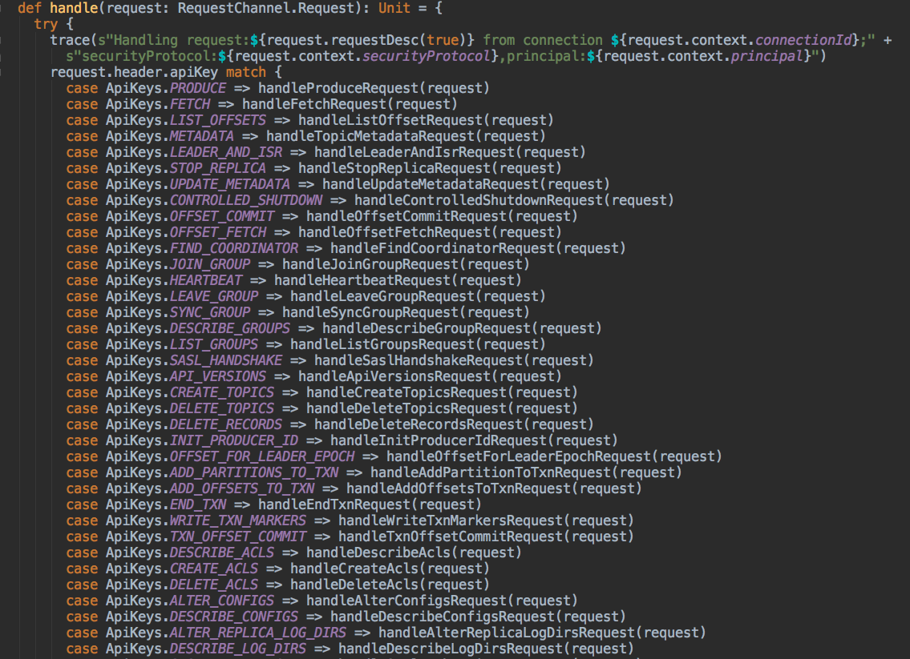

- 00 开篇词 为什么要学习Kafka？.md.html
- 01 消息引擎系统ABC.md.html
- 02 一篇文章带你快速搞定Kafka术语.md.html
- 03 Kafka只是消息引擎系统吗？.md.html
- 04 我应该选择哪种Kafka？.md.html
- 05 聊聊Kafka的版本号.md.html
- 06 Kafka线上集群部署方案怎么做？.md.html
- 07 最最最重要的集群参数配置（上）.md.html
- 08 最最最重要的集群参数配置（下）.md.html
- 09 生产者消息分区机制原理剖析.md.html
- 10 生产者压缩算法面面观.md.html
- 11 无消息丢失配置怎么实现？.md.html
- 12 客户端都有哪些不常见但是很高级的功能？.md.html
- 13 Java生产者是如何管理TCP连接的？.md.html
- 14 幂等生产者和事务生产者是一回事吗？.md.html
- 15 消费者组到底是什么？.md.html
- 16 揭开神秘的“位移主题”面纱.md.html
- 17 消费者组重平衡能避免吗？.md.html
- 18 Kafka中位移提交那些事儿.md.html
- 19 CommitFailedException异常怎么处理？.md.html
- 20 多线程开发消费者实例.md.html
- 21 Java 消费者是如何管理TCP连接的.md.html
- 22 消费者组消费进度监控都怎么实现？.md.html
- 23 Kafka副本机制详解.md.html
- 24 请求是怎么被处理的？.md.html
- 25 消费者组重平衡全流程解析.md.html
- 26 你一定不能错过的Kafka控制器.md.html
- 27 关于高水位和Leader Epoch的讨论.md.html
- 28 主题管理知多少.md.html
- 29 Kafka动态配置了解下？.md.html
- 30 怎么重设消费者组位移？.md.html
- 31 常见工具脚本大汇总.md.html
- 32 KafkaAdminClient：Kafka的运维利器.md.html
- 33 Kafka认证机制用哪家？.md.html
- 34 云环境下的授权该怎么做？.md.html
- 35 跨集群备份解决方案MirrorMaker.md.html
- 36 你应该怎么监控Kafka？.md.html
- 37 主流的Kafka监控框架.md.html
- 38 调优Kafka，你做到了吗？.md.html
- 39 从0搭建基于Kafka的企业级实时日志流处理平台.md.html
- 40 Kafka Streams与其他流处理平台的差异在哪里？.md.html
- 41 Kafka Streams DSL开发实例.md.html
- 42 Kafka Streams在金融领域的应用.md.html
- 加餐 搭建开发环境、阅读源码方法、经典学习资料大揭秘.md.html
- 结束语 以梦为马，莫负韶华！.md.html
加餐 搭建开发环境、阅读源码方法、经典学习资料大揭秘
你好，我是胡夕。
截止到现在，专栏已经更新了 38 讲，你掌握得怎么样了呢？如果暂时掌握得不是很好，也没有关系，慢慢来，有问题记得在留言区留言，我们一起讨论。
今天，我们来聊点儿不一样的。我总结了 3 个讨论热度很高的话题，现在一一来为你“揭秘”。
- 如何搭建 Kafka 开发环境？很多人对于编译和调试 Kafka 饶有兴致，却苦于无从下手。今天我就给你完整地演示一遍搭建 Kafka 开发环境的过程。
- 如何阅读 Kafka 源码？我曾经在专栏[第 1 讲]提到过我自己阅读 Kafka 源码的经历，后来我收到很多留言，问我是如何阅读的，今天，我就跟你分享一些阅读 Kafka 源代码的比较好的法则或者技巧。
- Kafka 的学习资料。幸运的是，我在这方面还是有过一些总结的，今天我会毫无保留地把资料全部分享给你。
Kafka 开发环境搭建
现在，我先来回答第 1 个问题：如何搭建 Kafka 开发环境。我以 IDEA 为例进行说明，Eclipse 应该也是类似的。
第 1 步：安装 Java 和 Gradle
要搭建 Kafka 开发环境，你必须要安装好 Java 和 Gradle，同时在 IDEA 中安装 Scala 插件。你最好把 Java 和 Gradle 环境加入到环境变量中。
第 2 步：下载 Kafka 的源码
完成第 1 步之后，下载 Kafka 的源码，命令如下：
$ cd Projects
$ git clone https://github.com/apache/kafka.git
这个命令下载的是 Kafka 的 trunk 分支代码，也就是当前包含所有已提交 Patch 的最新代码，甚至比 Kafka 官网上能够下载到的最新版本还要超前很多。值得注意的是，如果你想向 Kafka 社区贡献代码，通常要以 trunk 代码为主体进行开发。
第 3 步：下载 Gradle 的 Wrapper 程序套件
代码下载完成之后，会自动创建一个名为 kafka 的子目录，此时需要进入到该目录下，执行下面的这条命令，主要目的是下载 Gradle 的 Wrapper 程序套件。
$ gradle
Starting a Gradle Daemon (subsequent builds will be faster)
> Configure project :
Building project 'core' with Scala version 2.12.9
Building project 'streams-scala' with Scala version 2.12.9
Deprecated Gradle features were used in this build, making it incompatible with Gradle 6.0.
Use '--warning-mode all' to show the individual deprecation warnings.
See https://docs.gradle.org/5.3/userguide/command_line_interface.html#sec:command_line_warning
第 4 步：将 Kafka 源码编译打包成 Jar 文件
现在，你可以运行下列命令，将 Kafka 源码编译打包成 Jar 文件：
./gradlew clean releaseTarGz
通常你需要等待一段时间，经过一系列操作之后，比如 Gradle 拉取依赖 Jar 包、编译 Kafka 源码、打包等，你可以在 core 的 build/distributions 下面找到生成的 tgz 包：kafka_2.12-2.4.0-SNAPSHOT。解压之后，这就是一个可以正常启动运行的 Kafka 环境了。
第 5 步：把 Kafka 源码工程导入到 IDEA 中
这也是搭建开发环境的最后一步。你可以先执行下面的命令去创建 IDEA 项目所需要的项目文件：
$ ./gradlew idea # 如果你用的是 Eclipse，执行./gradlew eclipse 即可
接着，你需要打开 IDEA，选择“打开工程”，然后再选择 kafka 目录即可。
至此，我们就在 IDEA 中搭建了 Kafka 源码环境。你可以打开 Kafka.scala 文件，右键选择“运行”，这时，你应该可以看到启动 Kafka Broker 的命令行用法说明，如下图所示：

总体来说，Kafka 工程自从由使用 sbt 改为使用 Gradle 管理之后，整个项目的编译和构建变得简单多了，只需要 3、4 条命令就能在本机环境中搭建测试开发环境了。
Kafka 源码阅读方法
搭建好了开发环境，下一步自然就是阅读 Kafka 源码并尝试自行修改源码了。下图是 IDEA 上 Kafka 工程的完整目录列表。

在这张图中，有几个子目录需要你重点关注一下。
- core：Broker 端工程，保存 Broker 代码。
- clients：Client 端工程，保存所有 Client 代码以及所有代码都会用到的一些公共代码。
- streams：Streams 端工程，保存 Kafka Streams 代码。
- connect：Connect 端工程，保存 Kafka Connect 框架代码以及 File Connector 代码。
我之前说过，Kafka 源码有 50 万行之多，没有重点地进行通读，效率会特别低。最初我就是盲读源码的，深感效果极差，所以，我觉得非常有必要为你推荐几条最佳实践。
我建议你先从 core 包读起，也就是先从 Broker 端的代码着手。你可以按照下面的顺序进行阅读。
- log 包。log 包中定义了 Broker 底层消息和索引保存机制以及物理格式，非常值得一读。特别是 Log、LogSegment 和 LogManager 这几个类，几乎定义了 Kafka 底层的消息存储机制，一定要重点关注。
- controller 包。controller 包实现的是 Kafka Controller 的所有功能，特别是里面的 KafkaController.scala 文件，它封装了 Controller 的所有事件处理逻辑。如果你想弄明白 Controller 的工作原理，最好多读几遍这个将近 2000 行的大文件。
- coordinator 包下的 group 包代码。当前，coordinator 包有两个子 package：group 和 transaction。前者封装的是 Consumer Group 所用的 Coordinator；后者封装的是支持 Kafka 事务的 Transaction Coordinator。我个人觉得你最好把 group 包下的代码通读一遍，了解下 Broker 端是如何管理 Consumer Group 的。这里比较重要的是GroupMetadataManager 和 GroupCoordinator 类，它们定义了 Consumer Group 的元数据信息以及管理这些元数据的状态机机制。
- network 包代码以及 server 包下的部分代码。如果你还有余力的话，可以再读一下这些代码。前者的 SocketServer 实现了 Broker 接收外部请求的完整网络流程。我们在专栏第 24 讲说过，Kafka 用的是 Reactor 模式。如果你想搞清楚 Reactor 模式是怎么在 Kafka“落地”的，就把这个类搞明白吧。
从总体流程上看，Broker 端顶部的入口类是 KafkaApis.scala。这个类是处理所有入站请求的总入口，下图展示了部分请求的处理方法：

你可以进到不同的方法里面去看实际的请求处理逻辑。比如 handleProduceRequest 方法是处理 Producer 生产消息请求的，而 handleFetchRequest 方法则是处理消息读取请求的。
我们刚刚说的都是 core 代码包下的重要类文件。在客户端 clients 包下，我推荐你重点阅读 4 个部分的内容。
- **org.apache.kafka.common.record 包。**这个包下面是各种 Kafka 消息实体类，比如用于在内存中传输的 MemoryRecords 类以及用于在磁盘上保存的 FileRecords 类。
- **org.apache.kafka.common.network 包。**这个包不用全看，你重点关注下 Selector、KafkaChannel 就好了，尤其是前者，它们是实现 Client 和 Broker 之间网络传输的重要机制。如果你完全搞懂了这个包下的 Java 代码，Kafka 的很多网络异常问题也就迎刃而解了。
- org.apache.kafka.clients.producer 包。顾名思义，它是 Producer 的代码实现包，里面的 Java 类很多，你可以重点看看 KafkaProducer、Sender 和 RecordAccumulator 这几个类。
- **org.apache.kafka.clients.consumer 包。**它是 Consumer 的代码实现包。同样地，我推荐你重点阅读 KafkaConsumer、AbstractCoordinator 和 Fetcher 这几个 Java 文件。
另外，在阅读源码的时候，不管是 Broker 端还是 Client 端，你最好结合 Java 调试一起来做。通过 Debug 模式下打断点的方式，一步一步地深入了解 Kafka 中各个类的状态以及在内存中的保存信息，这种阅读方式会让你事半功倍。
Kafka 推荐学习资料
如果你暂时对搭建开发环境或阅读源码没有兴趣，但又想快速深入地学习 Kafka 的话，直接学习现成的资料也不失为一个妙法。接下来，我就向你推荐一些很有价值的 Kafka 学习资料。
第 1 个不得不提的当然就是Kafka 官网。很多人会忽视官网，但其实官网才是最重要的学习资料。你只需要通读几遍官网，并切实掌握里面的内容，就已经能够较好地掌握 Kafka 了。
第 2 个是 Kafka 的[JIRA 列表](https://issues.apache.org/jira/browse/KAFKA-8832?filter=-4&jql=project %3D KAFKA ORDER BY created DESC)。当你碰到 Kafka 抛出的异常的时候，不妨使用异常的关键字去 JIRA 中搜索一下，看看是否是已知的 Bug。很多时候，我们碰到的问题早就已经被别人发现并提交到社区了。此时，JIRA 列表就是你排查问题的好帮手。
第 3 个是Kafka KIP 列表。KIP 的全称是 Kafka Improvement Proposals，即 Kafka 新功能提议。你可以看到 Kafka 的新功能建议及其讨论。如果你想了解 Kafka 未来的发展路线，KIP 是不能不看的。当然，如果你想到了一些 Kafka 暂时没有的新功能，也可以在 KIP 中提交自己的提议申请，等待社区的评审。
第 4 个是 Kafka 内部团队维护的设计文档。在这里，你几乎可以找到所有的 Kafka 设计文档。其中关于 Controller 和新版本 Consumer 的文章都很有深度，我建议你一定要重点读一读。
第 5 个是著名的StackOverflow 论坛。当今，StackOverflow 论坛对程序员意味着什么，想必我不说你也知道。这里面的 Kafka 问题很有深度。事实上，从仅仅是 StackOverflow 上的一个问题，到最后演变成了 Kafka 的 Bug 修复或新功能实现的情况屡见不鲜。
第 6 个是 Confluent 公司维护的技术博客。这是 Kafka 商业化公司 Confluent 团队自己维护的技术博客，里面的技术文章皆出自 Kafka Committer 之手，质量上乘，我从中受益匪浅。比如讲述 Kafka 精确一次处理语义和事务的文章，含金量极高，你一定要去看一下。
第 7 个是我自己的博客。我会定期在博客上更新 Kafka 方面的原创文章。有的是我对 Kafka 技术的一些理解，有的是 Kafka 的最新动态。虽然不是国内质量最好的，但应该是坚持时间最长的。毕竟，我这个博客就只有 Kafka 的内容，而且已经写了好几年了。
最后，我给推荐你 3 本学习 Kafka 的书。
第 1 本是我的《Apache Kafka 实战》，我在里面总结了我这几年使用和学习 Kafka 的各种实战心得。这本书成书于 2018 年，虽然是以 Kafka 1.0 为模板撰写的，而 Kafka 目前已经出到了 2.3 版本，但其消息引擎方面的功能并没有什么重大变化，因此绝大部分内容依然是有效的。
第 2 本是《Kafka 技术内幕》。我个人非常喜欢这个作者的书写风格，而且这本书内容翔实，原理分析得很透彻，配图更是精彩。
第 3 本是 2019 年新出的一本名为《深入理解 Kafka》的书。这本书的作者是一位精通 RabbitMQ 和 Kafka 的著名技术人，对消息中间件有着自己独特的见解。
这些资料各有侧重，你可以根据自己的实际需求，选择相应的资料进行学习。
小结
好了，我们来小结一下。在今天的文章里，我跟你分享了很多经验，比如如何搭建 Kafka 开发环境、如何阅读 Kafka 源码等，希望这些经验可以帮你有效地节省时间，避免走一些弯路。另外，我把我收集到的相关学习资料全部列了出来，分享给你，也希望这些资料能够帮你更好地学习 Kafka。
讲到这里，我想再强调一下，学习是个持续的过程。经验和外部帮助固然重要，但最关键的，还是自己要付出努力，持之以恒。
还是那句话：Stay focused and work hard！